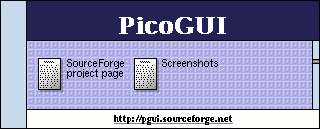

Get PicoGUI source code:
PicoGUI is a new type of GUI, designed to be portable and flexible.
I started developing it with a GUI for a PDA in mind, but it could also be
useful for desktop computers or set-top boxes.
If you are here for code, visit the CVS repository in the SourceForge
project page. Screenshots can also be reached from the above links.
I don't have much information on the architecture up yet, because it isn't
finished. However, the header files contain some small explanations of
the various data structures.
Here's a brief overview of the architecture:
- Widgets and layout engine are built in to the server, reducing the
size of the libraries and executables.
- Client/server - the connection between application and server, and
even between server and input device can be established through TCP/IP for
network-transparency
- Modular - video and input drivers can be changed at run-time
- Applications layout is done using panels instead of windows, to provide
full multitasking while conserving screen space
- I want to combine the flexibility of X-Windows with the simplicity
and speed of Palm OS.
News for September 24,2000 (micah):
The C client library that Philippe and I have been working on is almost
completed. The important things like event bindings, widget properties, and
packet buffering are 100% completed. The new theme code is going slowly
though. I just haven't had much time to work on it. On the bright side, I
think I've found a file format that will work and I have started writing a
theme compiler in the new themetools/themec directory. (I'm learning lex and
yacc!)
News for September 16,2000 (micah):
Philippe Ney was first to post actual code for the client lib. His demo
prog made a sucessful connection to the server, and sent some packets. I
cleaned up the code, debugged it, and added a handful of new features last
night. I have the design for the new theme system planned out but I'm only
starting to implement it. Find the new client lib in the cli_c directory (on
CVS of course) and the theme code I'm working on will soon be on the
theme_overhaul branch of the pgserver CVS.
BTW, we're actually using the mailing list now! Woohoo!
News for (very early) September 9,2000 (micah):
Finally have some code in the cli_c directory. Yep, the beginning of the
long-procrastinated C client library. I set up some of the headers, and a
Makefile, but it's a first step. After testing out PicoGUI with the Perl API
for a while, I decided I liked it enough to implement the C client lib about
the same way. (Yay for object oriented programming in pure C!)
News for September 8,2000 (micah):
Good news to report today. On Wednesday, (Sept 6) SmartData joined the PicoGUI project to port
it to their hardware. Philippe Ney has joined the developers to add device
drivers and a C client lib, and other things SmartData could need. (like an
interface to a JVM) So, now that there is more than one developer anyone
interested is encouraged to join the pgui-devel
mailing list.
In other news, the new driver archetecture is working just fine now. I
haven't implemented everything yet (such as on-the-fly mode switching) but
it already far exceeds the capability of the old interface. Also, just a few
hours ago I finished restructuring the header files so the C client lib will
be easier/possible.
Hmm... If I'm going to be posting news on a pseudo regular basis, maybe I
need a better web site. Would Slashcode be overkill? ;-)
As always, volunteers are welcome!
Updated [September 3,2000]:
Ugh. I have been too busy lately to update both the code and the HTML.
Quite a lot has been happening with PicoGUI. As always, download the code from CVS, but if you're lazy you can get a perpetually-out-of-date tarball on the
sourceforge page too ;-)
Some of the major things going on lately are the new driver systems and more example programs. The Typing Program example in the perl client lib demonstrates a lot of the more interesting features. Keep in mind, though, that the methods it uses for panels and message boxes are more kludgey than I would like so they will probably be changing.
As for drivers, the new fully-modular system works great. The SDL driver is done, the SVGAlib driver works but it doesn't have an input driver yet. Both drivers still need optimization. The new system doesn't look like much from the
outside though, because I haven't implemented the command line args or the
request structures to change video drivers/modes yet.
Well, happy hacking, and keep in mind that for the latest info use the CVS or
email me.
Updated [June 9,2000]:
Popup boxes work.
Combination text/bitmap buttons work.
Many speed enhancements in networking.
Still a bug with S_ALL and buttons, but next on my feature
list is scrolling, composite widgets, and (tada!) the text edit widget (with support for HTML and other cool stuff).
Still works in Linux and windoze with SDL, and the SVGAlib driver is in progress. Haven't started the 68EZ328 driver yet.
[
SourceForge project page
| Screenshots ]
 |
This web page created and maintained by Micah Dowty (Me)
Contact me with any questions you might have!
|